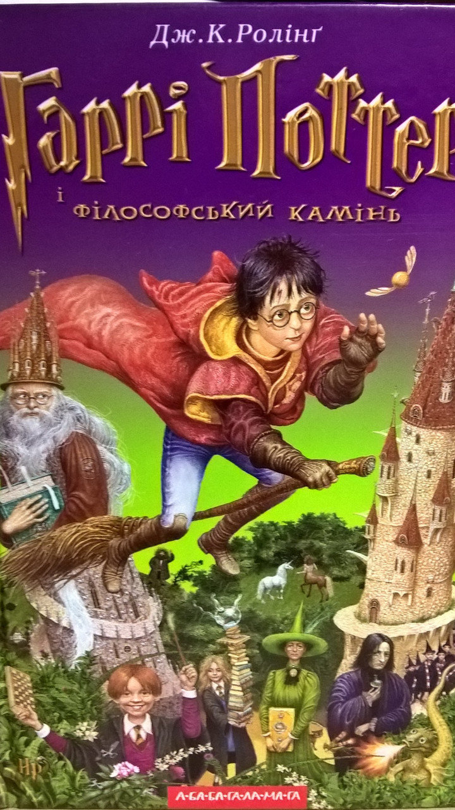

Моя улюблена книга
Плужник І.І.
Назва книги: Гаррі Поттер і філософський камінь
Автор: Джоан Роулінг
Жанр: Фантастика
Рік першого видання: 2007
Короткий опис
Сім’я Дурслей ненавидить все незвичайне. Але в один прекрасний день по вулицях починають ходити дивні люди в яскравому одязі і обговорювати племінника Дурслей – однорічного Гаррі Поттера. Вночі біля будинку Дурслей з’являються чарівники: професор Дамблдор, директор школи магії Хогвартс, і викладачка з тієї ж школи. З їхньої розмови стає ясно, що батьки-чарівники Гаррі вбиті темним магом Волан-Де-Мортом, ім’я якого бояться навіть вимовляти всі, крім Дамблдора. З якоїсь причини лиходієві не вдалося вбити хлопчика, Волан-Де-Морт зміг лише залишити на лобі дитини шрам, схожий на блискавку. Директор приймає рішення лишити Гаррі біля порога будинку Дурслей: тут дитина буде в безпеці.
Про автора
Джоан Роулінг(31 липня 1965)
Джоан Ролінґ народилась в англійському місті Єйт[en]. Ідея щодо написання книг про Гаррі Поттера спливла на думку майбутній авторці 1990 року під час поїздки потягом з Манчестера до Лондона, Ролінґ саме працювала дослідницею і двомовним секретарем у «Міжнародній амністії». У прийдешні сім років молода авторка пережила смерть матері, народження першої дитини, розлучення з першим чоловіком і відносну злиденність, аж допоки 1997 року не видала першу книгу з серії — «Гаррі Поттер і філософський камінь». Роман мав шість продовжень, останнє з яких вийшло друком 2007 року. З того часу Ролінґ написала чотири книги для дорослих: «Несподівана вакансія» (2012), а також (під псевдонімом Роберт Ґелбрейт) — детективи «Поклик зозулі» (2013), Шовкопряд[en] (2014) та «Кар'єра лиходія[en]» (2015). В 2016 році друком вийшло продовження поттеріани «Гаррі Поттер і прокляте дитя».
Зміст
Розділ1
Глава 1. МАЛЬЧИК, КОТОРЫЙ ВЫЖИЛ
Мистер и миссис Дурсль проживали в доме номер четыре по Тисовой улице и всегда с гордостью заявляли, что они, слава богу, абсолютно нормальные люди. Уж от кого-кого, а от них никак нельзя было ожидать, чтобы они попали в какую-нибудь странную или загадочную ситуацию. Мистер и миссис Дурсль весьма неодобрительно относились к любым странностям, загадкам и прочей ерунде.Мистер Дурсль возглавлял фирму под названием «Граннингс», которая специализировалась на производстве дрелей. Это был полный мужчина с очень пышными усами и очень короткой шеей. Что же касается миссис Дурсль, она была тощей блондинкой с шеей почти вдвое длиннее, чем положено при ее росте. Однако этот недостаток пришелся ей весьма кстати, поскольку большую часть времени миссис Дурсль следила за соседями и подслушивала их разговоры. А с такой шеей, как у нее, было очень удобно заглядывать за чужие заборы. У мистера и миссис Дурсль был маленький сын по имени Дадли, и, по их мнению, он был самым чудесным ребенком на свете. Семья Дурсль ей имела все, чего только можно пожелать. Но был у них и один секрет. Причем больше всего на свете они боялись, что кто-нибудь о нем узнает. Дурсли даже представить себе не могли, что с ними будет, если выплывет правда о Поттерах. Миссис Поттер приходилась миссис Дурсль родной сестрой, но они не виделись вот уже несколько лет. Миссис Дурсль даже делала вид, что у нее вовсе нет никакой сестры, потому что сестра и ее никчемный муж были полной противоположностью Дурслям. Дурсли содрогались при одной мысли о том, что скажут соседи, если на Тисовую улицу пожалуют Поттеры. Дурсли знали, что у Поттеров тоже есть маленький сын, но они никогда его не видели. И они категорически не хотели, чтобы их Дадли общался с ребенком таких родителей. Когда во вторник мистер и миссис Дурсль проснулись скучным и серым утром — а именно с этого утра начинается наша история, — ничто, включая покрытое тучами небо, не предвещало, что вскоре по всей стране начнут происходить странные и загадочные вещи. Мистер Дурсль что-то напевал себе под нос, завязывая самый отвратительный из своих галстуков. А миссис Дурсль, с трудом усадив сопротивляющегося и орущего Дадли на высокий детский стульчик, со счастливой улыбкой пересказывала мужу последние сплетни. Никто из них не заметил, как за окном пролетела большая сова-неясыть. В половине девятого мистер Дурсль взял свой портфель, клюнул миссис Дурсль в щеку и попытался на прощанье поцеловать Дадли, но промахнулся, потому что Дадли впал в ярость, что с ним происходило довольно часто. Он раскачивался взад-вперед на стульчике, ловко выуживал из тарелки кашу и заляпывал ею стены. — Ух, ты моя крошка, — со смехом выдавил из себя мистер Дурсль, выходя из дома. Он сел в машину и выехал со двора.
На углу улицы мистер Дурсль заметил, что происходит что-то странное, — на тротуаре стояла кошка и внимательно изучала лежащую перед ней карту. В первую секунду мистер Дурсль даже не понял, что именно он увидел, но затем, уже миновав кошку, затормозил и резко оглянулся. На углу Тисовой улицы действительно стояла полосатая кошка, но никакой карты видно не было. — И привидится же такое! — буркнул мистер Дурсль.
Наверное, во всем были виноваты мрачное утро и тусклый свет фонаря. На всякий случай мистер Дурсль закрыл глаза, потом открыл их и уставился на кошку. А кошка уставилась на него. Мистер Дурсль отвернулся и поехал дальше, продолжая следить за кошкой в зеркало заднего вида. Он заметил, что кошка читает табличку, на которой написано «Тисовая улица». Нет, конечно же, не читает, поспешно поправил он самого себя, а просто смотрит на табличку. Ведь кошки не умеют читать — равно как и изучать карты. Мистер Дурсль потряс головой и попытался выбросить из нее кошку. И пока его автомобиль ехал к Лондону из пригорода, мистер Дурсль думал о крупном заказе на дрели, который рассчитывал сегодня получить. Но когда он подъехал к Лондону, заполнившие его голову дрели вылетели оттуда в мгновение ока, потому что, попав в обычную утреннюю автомобильную пробку и от нечего делать глядя по сторонам, мистер Дурсль заметил, что на улицах появилось множество очень странно одетых людей. Людей в мантиях. Мистер Дурсль не переносил людей в нелепой одежде, да взять хотя бы нынешнюю молодежь, которая расхаживает черт знает в чем! И вот теперь эти, нарядившиеся по какой-то дурацкой моде. Мистер Дурсль забарабанил пальцами по рулю.
Его взгляд упал на сгрудившихся неподалеку странных типов, оживленно шептавшихся друг с другом. Мистер Дурсль пришел в ярость, увидев, что некоторые из них совсем не молоды, — подумать только, один из мужчин выглядел даже старше него, а позволил себе облачиться в изумрудно-зеленую мантию! Ну и тип! Но тут мистера Дурсля осенила мысль, что эти непонятные личности наверняка всего лишь собирают пожертвования или что-нибудь в этом роде… Так оно и есть! Стоявшие в пробке машины наконец тронулись с места, и несколько минут спустя мистер Дурсль въехал на парковку фирмы «Граннингс». Его голова снова была забита дрелями. Кабинет мистера Дурсля находился на девятом этаже, где он всегда сидел спиной к окну. Предпочитай он сидеть лицом к окну, ему, скорее всего, трудно было бы этим утром сосредоточиться на дрелях. Но он сидел к окну спиной и не видел пролетающих сов — подумать только, сов, летающих не ночью, когда им и положено, а средь бела дня! И это уже не говоря о том, что совы — лесные птицы, и в городах, тем более таких больших, как Лондон, не живут. В отличие от мистера Дурсля, находившиеся на улице люди отлично видели этих сов, стремительно пролетающих мимо них одна за другой, и широко раскрывали рты от удивления и показывали на них пальцами. Большинство этих людей в жизни своей не видели ни единой совы, даже в ночное время. В общем, у мистера Дурсля было вполне нормальное, лишенное сов утро. Он накричал на пятерых подчиненных, сделал несколько важных звонков и несколько раз повысил голос на своих телефонных собеседников. Так что настроение у него было просто отличное — до тех пор, пока он не решил немного размять ноги и купить себе булочку в булочной напротив. Мистер Дурсль уже забыл о людях в мантиях и не вспоминал о них, пока не столкнулся с группкой странных типов неподалеку от булочной. Он не мог понять, почему при одном только взгляде на них ему становилось не по себе. Эти типы тоже оживленно перешептывались, и он не заметил у них в руках ни одной кружки для сбора пожертвований. Выйдя из булочной с пакетом, в котором лежал большой пончик, мистер Дурсль вновь вынужден был пройти мимо этих странных личностей, и в этот момент он абсолютно случайно услышал:
— … да, совершенно верно, это Поттеры, именно так мне рассказывали…
— … да, их сын, Гарри…
Глава 2. Исчезнувшее стекло
Почти десять лет прошло с того утра, когда Дурсли обнаружили на своем пороге невесть откуда взявшегося племянника, но Тисовая улица за это время почти не изменилась. Солнце вставало над теми же ухоженными садиками и освещало ту же самую бронзовую четверку на входной двери дома Дурслей; оно пробиралось в гостиную, оставшуюся почти неизменной с того вечера, когда мистер Дурсль смотрел по телевизору пророческий выпуск новостей. Только стоящие на камине фотографии в рамках свидетельствовали о том, что с тех пор прошло немало времени. Десять лет назад на фотографиях было запечатлено нечто, напоминавшее большой розовый мяч в разноцветных чепчиках, но с тех пор Дадли Дурсль вырос, и теперь на фотографиях был крупный светловолосый мальчик, сидящий на своем первом велосипеде, кружащийся на ярмарочной карусели, играющий с отцом в компьютерные игры, мальчик в объятиях целующей его матери. Однако ничто на этих фотографиях не говорило о том, что в доме живет еще один ребенок. Тем не менее Гарри Поттер все еще жил здесь, и в настоящий момент он крепко спал, хотя спать ему оставалось недолго. Тетя Петунья уже проснулась и подходила к его двери, и через мгновение утреннюю тишину прорезал ее пронзительный визгливый голос:
— Подъем! Вставай! Поднимайся!
Гарри вздрогнул и проснулся. Тетя продолжала барабанить в дверь.
— Живо! — провизжала она.
Гарри услышал ее удаляющиеся шаги, а затем до него донесся звук плюхнувшейся на плиту сковородки. Он перевернулся на спину и попытался вспомнить, что же ему снилось. Это был хороший сон. В этом сне он летел по воздуху на мопеде. У него было странное ощущение, что когда-то он уже видел этот сон.
Тетя вернулась к его двери.— Ты что, еще не встал? — настойчиво поинтересовалась она.
— Почти, — уклончиво ответил Гарри.
— Шевелись побыстрее, я хочу, чтобы ты присмотрел за беконом. И смотри, чтобы он не подгорел, — сегодня день рождения Дадли, и все должно быть идеально.
В ответ Гарри застонал.
— Что ты там говоришь? — рявкнула тетя из-за двери.
— Нет, ничего. Ничего…
День рождения Дадли — как он мог забыть? Гарри медленно выбрался из постели и огляделся в поисках носков. Он обнаружил их под кроватью и, надевая, стряхнул ползающего по ним паука. Гарри привык к паукам — их было много в чулане под лестницей, а именно в чулане было его место. Одевшись, он пошел на кухню. Весь стол был завален приготовленными для Дадли подарками. Похоже, что Дадли подарили новый компьютер, который тот так хотел, еще один телевизор и гоночный велосипед — это не говоря обо всем прочем. Для Гарри оставалось загадкой, почему Дадли хотел гоночный велосипед, ведь кузен был очень толстым и ненавидел физические упражнения — хотя отлупить кого-нибудь он был совсем не против. Любимой «грушей» Дадли был Гарри, но Дадли далеко не всегда удавалось поймать кузена. Хотя поверить в то, что Гарри мог быстро бегать, было довольно сложно. Возможно, именно жизнь в темном чулане привела к тому, что Гарри выглядел меньше и слабее своих сверстников. К тому же он казался еще меньше и тоньше, чем был на самом деле, потому что ему приходилось донашивать старые вещи Дадли, а Дадли был раза в четыре крупнее его, так что одежда висела на Гарри мешком. У Гарри было худое лицо, острые коленки, черные волосы и ярко-зеленые глаза. Он носил круглые очки, заклеенные скотчем и только благодаря этому не разваливающиеся — Дадли сломал их, ударив Гарри по носу. Единственное, что Гарри нравилось в собственной внешности — это тонкий шрам на лбу, напоминавший молнию. Шрам был у него с самого детства, и первый осмысленный вопрос, который он задал тете Петунье, был как раз о том, откуда у него взялся этот шрам.
— Ты получил его в автокатастрофе, в которой погибли твои родители, — отрезала тетя. — И не приставай ко мне со своими вопросами.
«Не приставай ко мне со своими вопросами» — это было первое правило, которому он должен был следовать, чтобы жить в мире с Дурслями. Когда Гарри переворачивал подрумянившиеся ломтики бекона, в кухню вошел дядя Вернон.
— Причешись! — рявкнул он вместо утреннего приветствия.
Примерно раз в неделю дядя Вернон смотрел на Гарри поверх газеты и кричал, что племянника надо подстричь. Наверное, Гарри стригли чаще, чем остальных его одноклассников, но это не давало никакого результата, потому что его волосы так и торчали во все стороны, к тому же они очень быстро отрастали. К моменту когда на кухне появились Дадли и его мать, Гарри уже вылил на сковородку яйца и готовил яичницу с беконом. Дадли как две капли воды походил на своего папашу. У него было крупное розовое лицо, почти полностью отсутствовала шея, маленькие глаза были водянисто-голубыми, а густые светлые волосы аккуратно лежали на большой жирной голове. Тетя Петунья часто твердила, что Дадли похож на маленького ангела, а Гарри говорил про себя, что Дадли похож на свинью в парике. Гарри с трудом расставил на столе тарелки с яйцами и беконом — там почти не было свободного места. Дадли в это время считал свои подарки. А когда закончил, лицо его вытянулось.
— Тридцать шесть, — произнес он грустным голосом, укоризненно глядя на отца и мать. — Это на два меньше, чем в прошлом году.
— Дорогой, ты забыл о подарке от тетушки Мардж, он здесь, под большим подарком от мамы и папы! — поспешно затараторила тетя Петунья.
— Ладно, но тогда получается всего тридцать семь. — Лицо Дадли покраснело.
Гарри, сразу заметив, что у Дадли вот-вот приключится очередной приступ ярости, начал поспешно поглощать бекон, опасаясь, как бы кузен не перевернул стол. Тетя Петунья, очевидно, тоже почувствовала опасность.
— Мы купим тебе еще два подарка, сегодня в городе. Как тебе это, малыш? Еще два подарочка. Ты доволен?
Дадли задумался. Похоже, в голове его шла какая-то очень серьезная и сложная работа. Наконец он открыл рот.
— Значит… — медленно выговорил он. — Значит, их у меня будет тридцать… тридцать…
— Тридцать девять, мой сладенький, — поспешно вставила тетя Петунья.
— А-а-а! — Уже привставший было Дадли тяжело плюхнулся обратно на стул. — Тогда ладно…
Дядя Вернон выдавил из себя смешок.
— Этот малыш своего не упустит — прямо как его отец. Вот это парень! — Он взъерошил волосы на голове Дадли.
Тут зазвонил телефон, и тетя Петунья метнулась к аппарату. А Гарри и дядя Вернон наблюдали, как Дадли разворачивает тщательно упакованный гоночный велосипед, видеокамеру, самолет с дистанционным управлением, коробочки с шестнадцатью новыми компьютерными играми и видеомагнитофон. Дадли срывал упаковку с золотых наручных часов, когда тетя Петунья вернулась к столу. Вид у нее был разозленный и вместе с тем озабоченный.
Дадли и Пирс дружно захихикали. — Да, я знаю, — быстро сказал Гарри. — Это был просто сон. Он уже пожалел, что открыл рот. Дурсли терпеть не могли, когда он задавал вопросы, но еще больше они ненавидели, когда он говорил о чем-то странном, и не имело значения, был ли это сон или он увидел что-то такое в мультфильме. Дурсли сразу начинали сходить с ума, словно им казалось, что это его собственные идеи. Совершенно лишние и очень опасные идеи. Воскресенье выдалось солнечным, и в зоопарке было полно людей. На входе Дурсли купили Дадли и Пирсу по большому шоколадному мороженому, а Гарри достался фруктовый лед с лимонным вкусом — и то только потому, что они не успели увести его от прилавка, прежде чем улыбающаяся мороженщица, обслужив Дадли и Пирса, спросила, чего хочет третий мальчик. Но Гарри и этому был рад, он с удовольствием лизал фруктовый лед, наблюдая за чешущей голову гориллой, — горилла была вылитый Дадли, только с темными волосами. У Гарри давно не было такого прекрасного утра. Правда, он был настороже и старался держаться чуть в стороне от Дурслей, потому что к полудню заметил, что Дадли и Пирсу уже надоело смотреть на животных, а значит, они могут решить заняться своим любимым делом — попытаться избить его. Но пока все обходилось. Они пообедали в ресторанчике, находившемся на территории зоопарка. А когда Дадли закатил истерику по поводу слишком маленького куска торта, дядя Вернон заказал ему кусок побольше, а остатки маленького достались Гарри. Впоследствии Гарри говорил себе, что начало дня было чересчур хорошим для того, чтобы таким же оказался и его конец. После обеда они пошли в террариум. Там было прохладно и темно, а за освещенными окошками прятались рептилии. Там, за стеклами, ползали и скользили по камням и корягам самые разнообразные черепахи и змеи. Гарри было интересно абсолютно все, но Дадли и Пирс настаивали на том, чтобы побыстрее пойти туда, где живут ядовитые кобры и толстенные питоны, способные задушить человека в своих объятиях. Дадли быстро нашел самую большую в мире змею. Она была настолько длинной, что могла дважды обмотаться вокруг автомобиля дяди Вернона, и такой сильной, что могла раздавить его в лепешку, но в тот момент она явно была не в настроении демонстрировать свои силы. А если точнее, она просто спала, свернувшись кольцами. Дадли прижался носом к стеклу и стал смотреть на блестящие коричневые кольца.
— Пусть она проснется, — произнес он плаксивым тоном, обращаясь к отцу.
Дядя Вернон постучал по стеклу, но змея продолжала спать.
— Давай еще! — скомандовал Дадли.
Дядя Вернон забарабанил по стеклу костяшками кулака, но змея не пошевелилась. — Мне скучно! — завыл Дадли и поплелся прочь, громко шаркая ногами. Гарри встал на освободившееся место перед окошком и уставился на змею. Он бы не удивился, если бы оказалось, что та умерла от скуки, ведь змея была абсолютно одна, и ее окружали лишь глупые люди, целый день стучавшие по стеклу, чтобы заставить ее двигаться. Это было даже хуже, чем жить в чулане, единственным посетителем которого была тетя Петунья, барабанящая в дверь, чтобы тебя разбудить. По крайней мере, Гарри мог выходить из чулана и бродить по всему дому. Внезапно змея приоткрыла свои глаза-бусинки. А потом очень, очень медленно подняла голову так, что та оказалась вровень с головой Гарри. Змея ему подмигнула. Гарри смотрел на нее, выпучив глаза. Потом быстро оглянулся, чтобы убедиться, что никто не замечает происходящего, — к счастью, вокруг никого не было. Он снова повернулся к змее и тоже подмигнул ей. Змея указала головой в сторону дяди Вернона и Дадли и подняла глаза к потолку. А потом посмотрела на Гарри, словно говоря: «И так каждый день». — Я понимаю, — пробормотал Гарри, хотя и не был уверен, что змея слышит его через толстое стекло. — Наверное, это ужасно надоедает. Змея энергично закивала головой. — Кстати, откуда вы родом? — поинтересовался Гарри. Змея ткнула хвостом в висевшую рядом со стеклом табличку, и Гарри тут же перевел взгляд на нее. «Боа констриктор, Бразилия», — прочитал он. — Наверное, там было куда лучше, чем здесь?
Боа констриктор снова махнул хвостом в сторону таблички, и Гарри прочитал: «Данная змея родилась и выросла в зоопарке». — А понимаю, значит, вы никогда не были в Бразилии? Змея замотала головой. В этот самый миг за спиной Гарри раздался истошный крик Пирса, Гарри и змея подпрыгнули от неожиданности. — ДАДЛИ! МИСТЕР ДУРСЛЬ! СКОРЕЕ СЮДА, ПОСМОТРИТЕ НА ЗМЕЮ! ВЫ НЕ ПОВЕРИТЕ, ЧТО ОНА ВЫТВОРЯЕТ! Через мгновение, пыхтя и отдуваясь, к окошку приковылял Дадли. — Пошел отсюда, ты, — пробурчал он, толкнув Гарри в ребро. Гарри, не ожидавший удара, упал на бетонный пол. Последовавшие за этим события развивались так быстро, что никто не понял, как это случилось: в первое мгновение Дадли и Пирс стояли, прижавшись к стеклу, а уже через секунду они отпрянули от него с криками ужаса. Гарри сел и открыл от удивления рот — стекло, за которым сидел удав, исчезло. Огромная змея поспешно разворачивала свои кольца, выползая из темницы, а люди с жуткими криками выбегали из террариума. Гарри готов был поклясться, что, стремительно проползая мимо него, змея отчетливо прошипела: — Бразилия — вот куда я отправлюсь… С-с-спасибо, амиго… Владелец террариума был в шоке. — Но тут ведь было стекло, — непрестанно повторял он. — Куда исчезло стекло? Директор зоопарка лично поднес тете Петунье чашку крепкого сладкого чая и без устали рассыпался в извинениях. Пирс и Дадли были так напуганы, что несли жуткую чушь. Гарри видел, как змея, проползая мимо них, просто притворилась, что хочет схватить их за ноги, но когда они уже сидели в машине дяди Вернона, Дадли рассказывал, как она чуть не откусила ему ногу, а Пирс клялся, что она пыталась его задушить. Но самым худшим для Гарри было то, что Пирс наконец успокоился и вдруг произнес: — А Гарри разговаривал с ней — ведь так, Гарри? Дядя Вернон дождался, пока за Пирсом придет его мать, и только потом повернулся к Гарри, которого до этого старался не замечать. Он был так разъярен, что даже говорил с трудом.